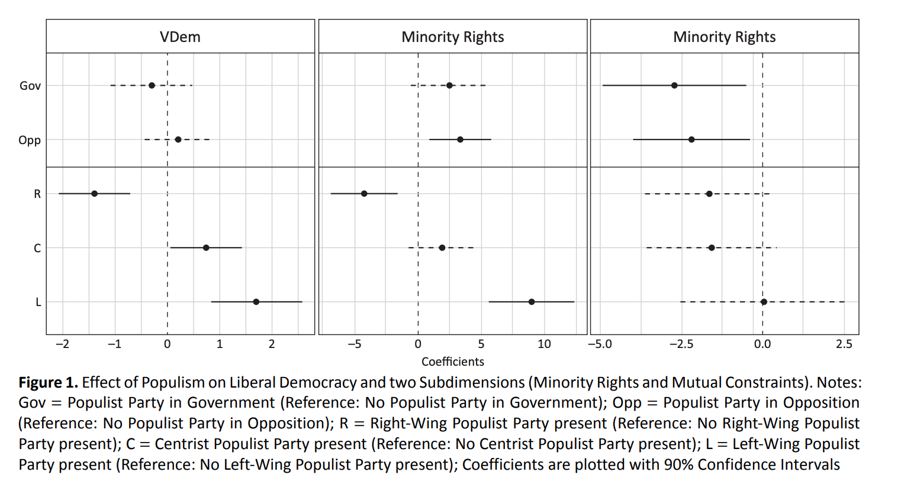

Writing Empirical Papers
Data Analytics and Visualization with R
Session 14
Data Essay: Due June 13, 2023, 23:59
The text should read like a research design and data analysis parts of a research paper, no longer than 3500 words (less is better)
Your GitHub repo should contain all replication material
- All steps of the analysis should be performed in
Rand documented in aqmdfile - Your code should be well-documented, commented out and run smoothly
- All steps of the analysis should be performed in
Your essay in PDF format (with a signed statutory declaration) should be on ILIAS, too
No collaboration allowed at this stage
For conceptual questions, ask me via Slack DM or during office hours
For
R/Giterrors, post on Slack#helpchannel
Empirical Paper Structure
- Introduction
- Literature Review
- Theory
- Empirical Strategy (aka Research Design)
- Results
- Robustness Tests
- Conclusion
Empirical Strategy
- There are various ways to structure your this section. It depends on what you are doing in that paper.
- Often a good approach is to find a nice (i.e. published in good journal) paper that does something similar (e.g. also RDD or also matching), and loosely follow the structure of it
- Think of this section as:
- guidance for replicating your analysis (i.e. no steps should be omitted in discussion, otherwise one cannot replicate it)
- justification that what you are doing is the best thing you can do with what you have
- in this data essay, this means the best you can do with the data given
- in general, when you also select datasets to test your hypotheses, justification of case/data selection is required
Empirical Startegy I
Discuss the data you are using to test the hypotheses:
- sources, coverage of the final dataset (geographical & temporal): justify the selection
- mention any preprocessing step you make: did you drop any cases? did you select any subsamples for main analysis?
Discuss the operationalization of your main variables
- level of measurement
- if there are alternatives for measurement, why you opt for this one (you may include others as robustness if there are no clear preferences though)
Start with descriptive stats for main variables and general info, like the number of cases, etc.
Do not put tables with descriptive stats for all variables you’re using in main text. Put the full table in Appendix
In main text, use crosstabs for main variables for summary stats or Graphs for (conditional) distributions of DV: over time (if applicable), main IVs. Include the most informative option, not everything
Empirical Strategy II
Discuss how you plan to identify the relationship between your main IV and DV:
- Do you opt for regression or something else?
- Papers that primarily utilize experimental data, diff-in-diff or RDD often state right away that they use it (see e.g. Broockman 2013)
- When working with regression, explain what control variables you include and why.
- Do you include fixed effects? What do they help to account for?
- When using matching, you can either do it from the start and explain why statistical control is a superior approach or start with a multiple regression and then use matching as a robustness check for your regression (if the results hold, of course)
- If you used a DAG for model building & covariate selection, you can put it in the main text or, better, in Appendix
- Do you opt for regression or something else?
When describing modeling approach, discuss which model you select (e.g., linear vs. logistic regression) and why (e.g. nature of the dependent variable)
It may be helpful to include the complete regression equation to illustrate model specifications (see Problem Sets for examples)
Results I: Regression Results
- Explain what you have done step-by-step, building from simple to more complex
- Include all models into one well-formatted table (if you do different analyses, like with completely different sets of IVs, it may be a good idea to split tables). Report the models that are central for your argument
- Never leave tables/models and graphs hanging in the paper with no comments in the text. Make sure you refer to each table/model/figure (not necessarily in equal amount of detail)
- Focus on interpretation of the effects for your main independent variables in terms of sign, size (where possible), and statistical significance. Don’t go into much depth about controls
- There is usually no need to include a long discussion and plots for model diagnostics in the main text. Just mention that you have done the tests and whether the model assumptions hold (hopefully, they will, if not - respecify model). It will be a good idea, however, to put model diagnostics plots/tables into appendix and provide some comments there.
More on Using Tables and Figures
- Tables and figures should be clear, easily legible, and quickly understood by the reader
- Tables and figures should stand alone, and not require the reader to reference the text at all (but should still be described in text!)
- This requires a table/figure to minimally contain:
- A title explaining the material concisely and clearly, with information about the outcome variable of other meaningful quantity of interest describe
- Information on the sample time period and number of observations included
- A note or notes that describe clearly what different cell entries or graphed material represents
- Meaningful variable names or labels, which clearly indicate meaning
- Clear and documented units of measurement
- Legends and captions that provide additional information when necessary
Results II: Substantive Interpretation
- When model coefficients are not easily interpretable, other more understandable quantities should be produced for the reader along with their estimation uncertainty
- Best option would be to use simulations for your main model
- Mention which model you picked and explain why (probably this would be your main model with all confounders included)
- Use appropriate quantities of interest and meaningful scenarios (e.g., typical case in the data)
- Discuss the substantive magnitude of the effects as well the uncertainty surrounding those effects
- In the notes to the plot (or on the plot), mention the model you used to produce the plot and the level of confidence intervals
Results III: Robustness and Limitations
- Robustness: are your findings heavily dependent on the data/model you choose?
- Here you pretty much show that your results are not a result of you spending hours running models and carefully selecting the data/model/specification that produce significant results but they hold regardless of some changes in the empirical strategy
- Try alternative measures for variables (e.g., different democracy scores)
- Try different model/specification: e.g., interaction/subsamples, etc.
- Try matching/IPW in addition to statistical control in regression if vyou suspect selection bias (you can dichotomize the IV if it’s continuous if you want to match on it)
- Limitations: what are the shortcomings of your analysis despite your best efforts?
- Any data-related limitations? measurement?
- Any important but missing (maybe due to data availability) issues?
- Any alternative explanations for patters you find that you can’t rule out?
- Think of this part as a way to show that not only did you do the analysis but you also see what could be improved and that you have thought about these potential problems of your study.
Example I
Paper with Observational Data & Regression
On the Distinct Effects of Left-Wing and Right-Wing Populism on Democratic Quality
- An example of a well-structured empirical paper (not the best paper overall on the topic though)
This study examines the differences and commonalities of how populist parties of the left and right relate to democracy. The focus is narrowed to the relationship between these parties and two aspects of democratic quality, minority rights and mutual constraints. Our argument is twofold: first, we contend that populist parties can exert distinct influences on minority rights, depending on whether they are left-wing or right-wing populist parties. Second, by contrast, we propose that the association between populist parties and mutual constraints is a consequence of the populist element and thus, we expect no differences between the left-wing and right-wing parties. We test our expectations against data from 30 European countries between 1990 and 2012. Our empirical findings support the argument for the proposed differences regarding minority rights and, to a lesser extent, the proposed similarities regarding mutual constraints. Therefore we conclude that, when examining the relationship between populism and democracy, populism should not be considered in isolation from its host ideology.
Empirical Strategy: Data Description
To test our theoretical arguments, we use a twofold strategy. First, we assess the differences between populist parties in government and opposition. Second, we distinguish between left-wing, center and right-wing populism to investigate the expected associations with minority rights and mutual constraints.
Empirically, we use a pooled cross-sectional design. Since we use the role within a political system as well as a party’s host ideology, we opted for cabinets as the temporal unit of analysis. This approach allows us to determine whether a party is in government or opposition with great precision, while other approaches such as country-years are considerably more imprecise. Our data includes information from 30 European countries between 1990 and 2012. This time span captures major events for European populist parties, from their establishment through their rise. We exclude cabinets with duration of fewer than six months as we assume that any measurable impact is only evident after some time.
Empirical Strategy: Dependent Variable
- Because the datasets mentioned here are large and well-known, it may be okay to include raw variable names as authors do. But better avoid doing this
- Better if summary stats/plots with (conditional) distribution were also included
To measure democratic quality based on our concept of liberal democracy, we draw on three different sources. We measure aggregated liberal democratic quality by using the liberal democracy score (
v2x_libdem) of the Varieties of Democracy Project (Coppedge et al., 2011). To capture the two subdimensions, mutual constraints, and minority rights, we rely on the Democracy Barometer. For mutual constraints, we use the aggregated dimension of horizontal checks (MC_CHECKS, Merkel et al., 2016, p. 29) which measures the balance between executive and legislative (ratio of parliamentary seats controlled by government to parliamentary seats controlled by opposition), the balance of checks between executive and legislative (ratio of control instruments of legislative over executive to control instruments of executive over legislative), and the power of judicial branch to review political decisions. This measure taps into the checks-and-balances aspect. For minority rights, we use an indicator for the effective access to power for minorities (REP_DR3, Merkel et al., 2016, p. 53) that measures the descriptive representation of minorities and the extent to which they have access to central power.
Empirical Strategy: Independent Variables
- Variable coding description (detailed, but not step-by-step coding description)
- Exclusions based on this variable mentioned
Empirical Strategy: Control Variables
- Variables + unit measured; detailed justification saved for appendix
- If space allows, better include justification right in this section
In addition to our central variables, we include a selected set of covariates that, in theory, may relate to both the presence of populist parties as well as the levels of our democratic measures. These variables are the level of democratic consolidation (time in years since democratization), cabinet duration (in years), cabinet composition (surplus governments, minimal winning coalitions, and minority governments), economic development (GDP per Capita in 1,000 US Dollar), and a dichotomous variable to distinguish between post-communist countries and other countries. A detailed rationale for the inclusion of these variables can be found in Appendix C.
Empirical Strategy: Statistical Model
- Techy description (don’t worry if you don’t get it)
- Linear is often the default and people don’t justify it. But if not using the linear model, justification is required
To control for country-specific effects, we apply a linear mixed-effects model with cabinets nested under each country (Gelman & Hill, 2007). The respective countries serve as groups. This particular model also allows us to compare both intra- and cross-country variance. Given our interest in the change in democratic quality as a consequence of the presence of populist parties, modeling intra-country variance allows us to approximate this process.
Empirical Results
- No table, instead the coefficient plot (table is still there in the Appendix) + description of the plot in text (see paper)
- No further quantities presented (okay as it’s a linear model)

Example II
Candidates’ Political Incentives (Broockman 2013)
Paper used in matching lab/problem set: https://onlinelibrary.wiley.com/doi/10.1111/ajps.12018
Empirical Strategy:
- Description of the original experimental design in detail
- Identification Strategy: experiment allows to isolate effects due to randomization
- Data on Legislators and Excluded Observations: who were interviewed? who were dropped and why?
Results:
- Single table with model specifications for main results
- Each model is described
- Matching as alternative to statistical control for non-random variable is included
Robustness:
- Potential alternate explanations tested & discussed and ruled out